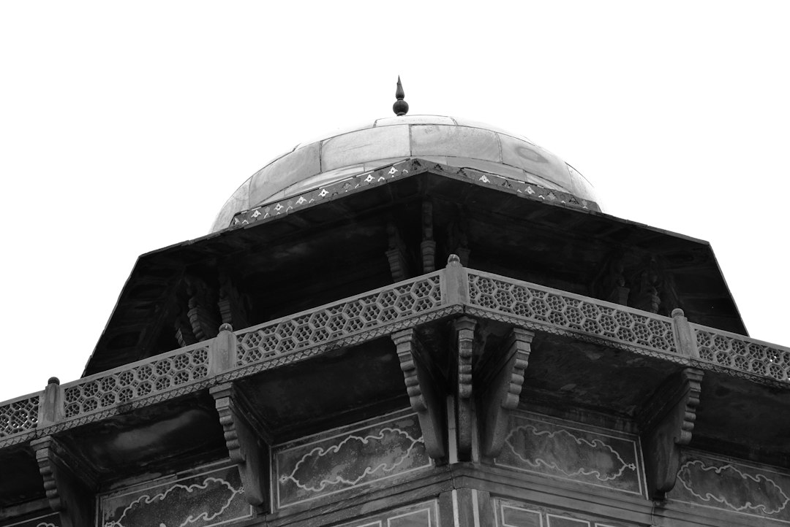
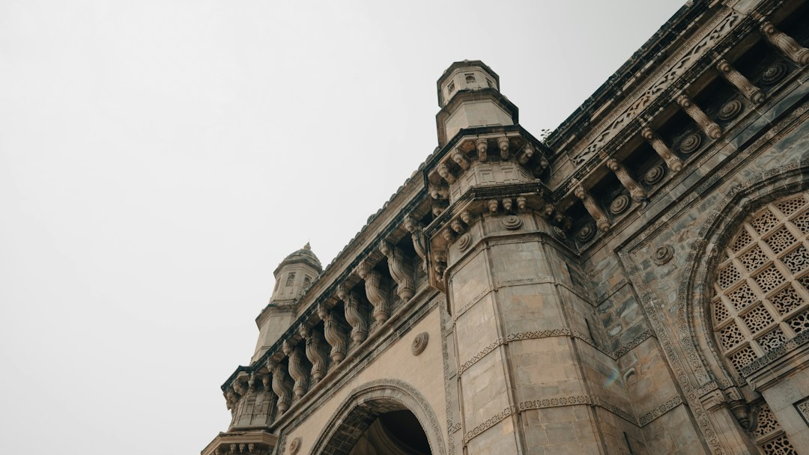
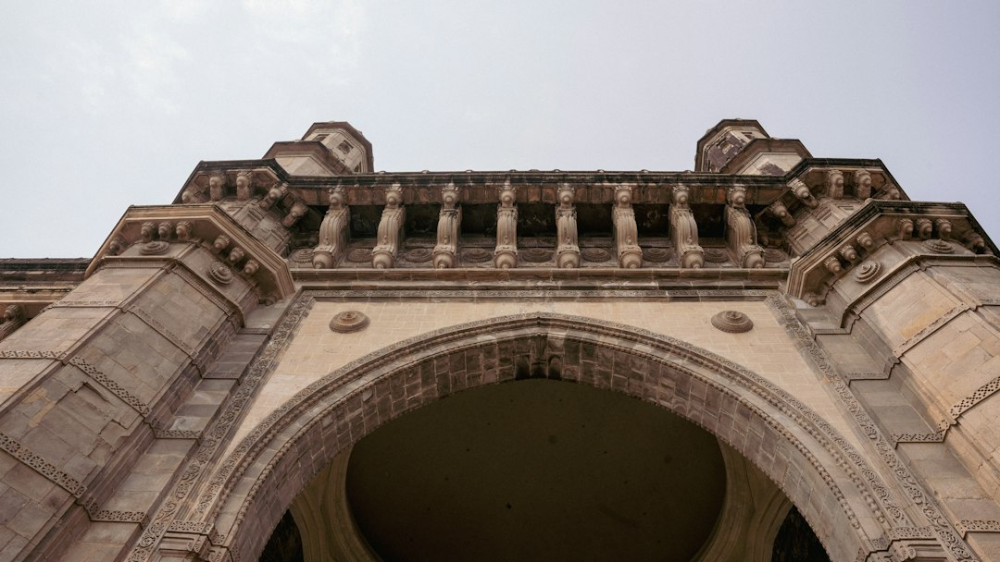
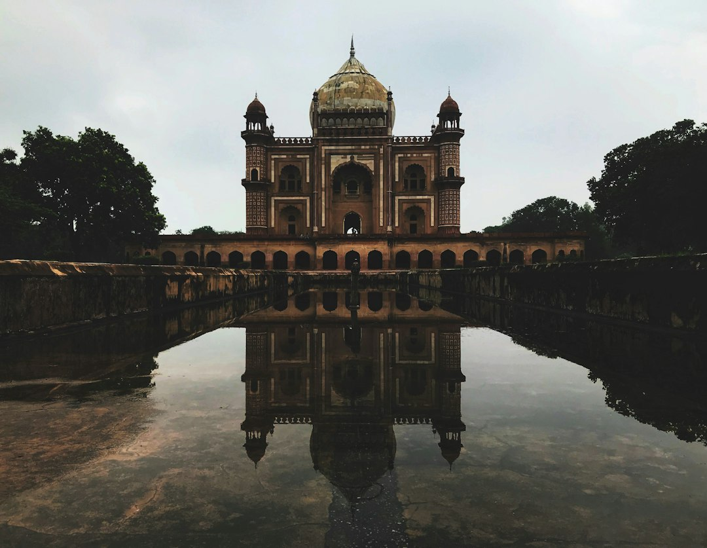
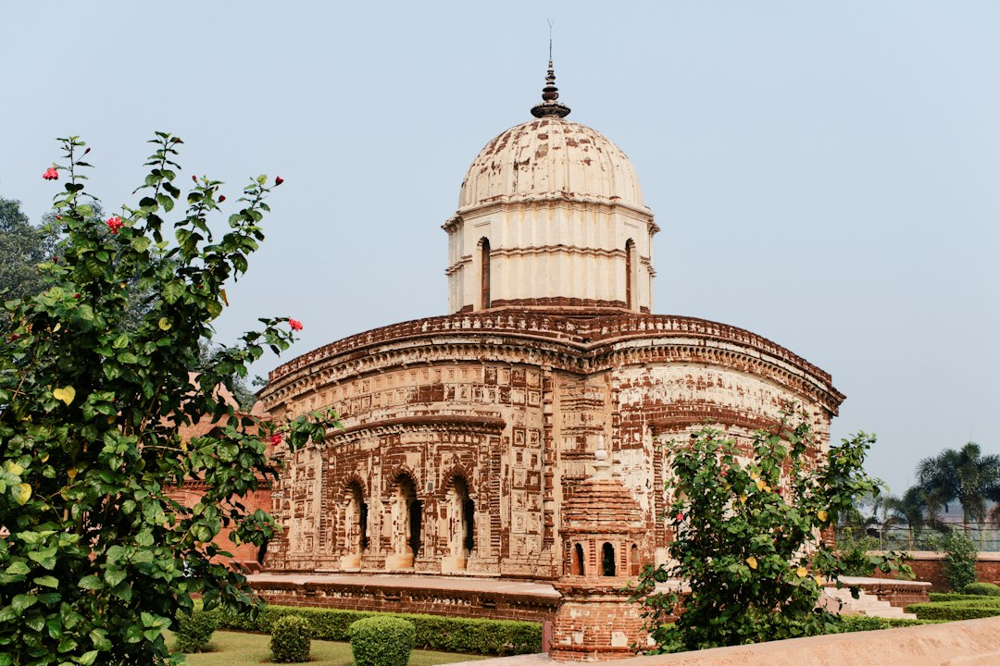
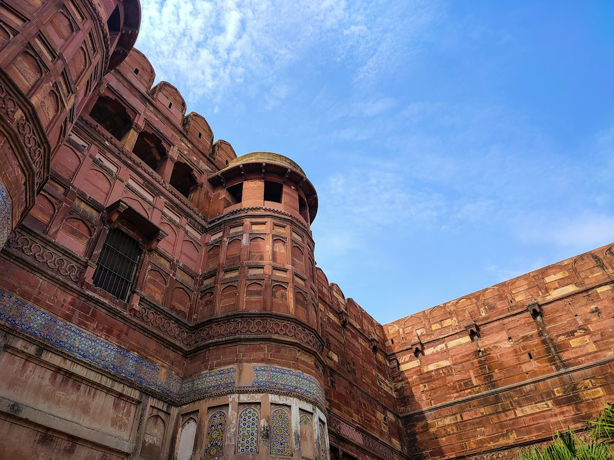

📍 Location: Thatta,
Sindh, Pakistan
📅 Period: 14th–18th
century A.D.
🏷️ Category: Islamic
Architecture / Funerary / UNESCO World Heritage Site
⚠️ Status: UNESCO
World Heritage Site (inscribed 1981 — Makli Hill; Shah Jahan Mosque also
significant)
🔢 Classification: Necropolis
and Mosque Complex
📏 Significance: Architectural,
Historical, Artistic
🗺️ Coordinates: 24°45′N
67°54′E

The City of the Dead That Outlived the City of the
Living
Thatta was once the capital of Sindh. For nearly three
centuries — from the fourteenth to the seventeenth — it served as the seat of
government for successive dynasties: the Sammas, the Arghuns, the Tarkhans,
and, for a time, the Mughals. It was a prosperous city, situated on the lower
Indus, connected by river to the sea, and by trade routes to the markets of
Gujarat, the Persian Gulf, and Central Asia.

Today, Thatta is a modest provincial town. Its commercial
importance vanished centuries ago. But its dead remain, and their tombs are
among the most remarkable ensembles of funerary architecture in the Islamic
world.
Makli Hill — the necropolis of Thatta — extends across a
ridge approximately six kilometres long and over a kilometre and a half wide,
containing an estimated half a million to one million graves, spanning a period
of roughly four hundred years. It is one of the largest necropolises anywhere
on earth.

The Chaukhandi graveyard is a 15th to 18th-century,
600-year-old historic cemetery
The major tombs at Makli Hill are not mere grave markers.
They are buildings — substantial, architecturally sophisticated, and decorated
with a range of techniques that reflect the cultural crosscurrents of medieval
Sindh.

The Tomb of Isa Khan Tarkhan II (late 16th century) —
A large stone structure with finely carved decoration, incorporating
Hindu-influenced motifs alongside Islamic geometric patterns. The blend of
traditions is characteristic of Sindhi architecture of the period.
The Tomb of Jan Baba (c. 15th century) — A
sandstone tomb with intricate surface carving, including floral and geometric
designs of exceptional quality.
The Tomb of Diwan Shurfa Khan (18th century) —
Among the later monuments, showing Mughal influence in its proportions and
decoration.
The Tomb of Mirza Jani Beg (early 17th century) —
Clad in glazed tile work of blue, white, and turquoise, this tomb displays the
kashi kari (tile mosaic) tradition that links Sindh to the broader tile-working
traditions of Iran and Central Asia.
The stylistic range is remarkable. Within a single
necropolis, one can observe the evolution of architectural form and decorative
practice across four centuries, and the interplay of local Sindhi, Gujarati,
Persian, and Mughal influences.
Below Makli Hill, within the town of Thatta itself, stands
the Shah Jahan Mosque — built in 1647 by the Mughal Emperor Shah Jahan,
reportedly in gratitude for the hospitality extended to him by the people of
Thatta during a period of political exile before his accession to the throne.

The mosque is remarkable for two features. First, its
acoustic design: the building is constructed in such a way that a person
speaking at one end of the prayer hall can be heard clearly at the other,
without any amplification. The domes — of which there are 93 in total — are
shaped to function as acoustic chambers, distributing sound evenly throughout
the space.
Second, its tile work. The mosque is extensively decorated
with blue, white, and turquoise glazed tiles, arranged in geometric star
patterns of considerable complexity. The effect, in the dim interior, is of a
space at once austere and luminous — a quality difficult to reproduce in
photographs and impossible to forget in person.
The monuments of Thatta and Makli Hill represent the fullest
expression of a distinctly Sindhi architectural tradition — one that borrowed
freely from neighbouring regions but synthesized its borrowings into something
recognizable and original.
Sindhi architecture of this period is characterized by the
use of local stone (Makli limestone and sandstone), by elaborate surface
carving that incorporates both Islamic and Hindu-derived motifs, and by the
application of glazed tile work in a palette dominated by blues and whites. The
carved stone tombs of Makli, in particular, display a decorative vocabulary
that includes medallions, rosettes, and interlocking geometric patterns of
remarkable intricacy.
This tradition did not develop in isolation. The Samma
dynasty, which ruled Sindh from the fourteenth to the early sixteenth century,
maintained close contacts with Gujarat, and the influence of Gujarati stone
carving is visible in several of the earlier tombs. The later Tarkhan and
Mughal periods brought Persian and Central Asian influences. The result is an
architecture of synthesis — local in its materials, cosmopolitan in its forms.
The historical monuments at Makli, Thatta, were inscribed on
the UNESCO World Heritage List in 1981. The inscription recognizes the
necropolis as "an exceptional site" and notes the "unique fusion
of diverse influences into a local style."
Conservation, however, has been a persistent challenge. The
scale of the necropolis is overwhelming — hundreds of individually significant
structures spread across a vast area. Many of the tombs are in advanced states
of deterioration, affected by wind erosion, salt damage, vegetation growth,
and, in some cases, vandalism or informal quarrying of stone.
Several conservation campaigns have been undertaken, with
support from UNESCO, the Japanese government, and Pakistani federal and
provincial agencies. The most visible interventions have focused on the major
tombs, but the lesser structures — smaller graves, boundary walls, subsidiary
buildings — continue to decay with limited intervention.
Thatta remembers what the world has forgotten: that Sindh
was once a centre of power, learning, and artistic achievement. The monuments
of Makli Hill and the Shah Jahan Mosque are the physical evidence of this
forgotten eminence. They record, in stone and tile, the passage of dynasties,
the evolution of artistic traditions, and the enduring human impulse to mark
the places where the dead lie.

The city of the living has diminished. The city of the dead
endures. This is not unusual in the history of civilizations. What is unusual
is the scale — the sheer number of graves, the concentration of architectural
quality, the range of stylistic expression. Makli Hill is not merely a
cemetery. It is an archive.
Thatta was once among the most
important cities in South Asia — a bustling capital of successive Sindhi
dynasties, a centre of Islamic scholarship, and a city wealthy enough to
attract the patronage of the Mughal emperors themselves. Today, its most extraordinary
monument is the Shah Jahan Mosque, a building that so impressed the Emperor
Shah Jahan that he ordered its construction as a gift to the city that had
sheltered him during a period of political exile.
The Makli Necropolis, stretching
across more than 10 square kilometres on the outskirts of Thatta, is perhaps
even more remarkable. One of the largest funerary sites in the world, it
contains the tombs of an estimated half-million people — royalty, saints,
soldiers, scholars — spanning four centuries of Sindhi and Mughal history.
Walking through Makli is an almost surreal experience: an entire city of the
dead, its architecture ranging from simple sandstone markers to elaborately
carved mausoleums of extraordinary beauty.
As a UNESCO World Heritage Site,
Thatta's monuments represent one of the finest surviving concentrations of
Islamic funerary and religious architecture in South Asia. They deserve the
same level of international recognition and tourist interest that comparable
sites in Egypt or Turkey receive. The story of Thatta is the story of Islamic
civilisation's richest period in Sindh — a story told in tile, stone, and
silence.
Q1: What is Makli Necropolis
and why is it significant?
Makli Necropolis is one of the largest burial grounds in the
world, covering over 10 square kilometres near Thatta. It contains the tombs of
an estimated 500,000 people, including rulers, saints, and scholars, spanning
the 14th to 18th centuries, and represents a unique concentration of Islamic
funerary architecture.
Q2: Who built the Shah Jahan
Mosque in Thatta?
The Shah Jahan Mosque was commissioned by the Mughal Emperor
Shah Jahan in the 17th century as a gesture of gratitude to the people of
Sindh, who had provided refuge to him during a period of political difficulty
before he ascended to the throne.
Q3: When was Thatta at its peak
as a city?
Thatta was at its most prosperous between the 14th and 17th
centuries, serving as the capital of the Samma, Arghun, and Tarkhan dynasties
before coming under Mughal control. It was an important port city and a major
centre of Islamic learning during this period.
Q4: How far is Thatta from
Karachi?
Thatta is located approximately 98 kilometres east of
Karachi along the Indus Highway, making it a manageable day trip from
Pakistan's largest city for heritage travellers.
📊 Summary Table of
Historical Facts
|
Detail |
Information |
|
Site Name |
Historical Monuments at Makli, Thatta |
|
Location |
Thatta, Sindh, Pakistan |
|
Necropolis Period |
14th–18th century A.D. |
|
Necropolis Area |
~6 km long, ~1.5 km wide |
|
Estimated Graves |
500,000 to 1,000,000 |
|
Key Tombs |
Isa Khan Tarkhan II, Jan Baba, Mirza Jani Beg |
|
Shah Jahan Mosque |
Built 1647; 93 domes; acoustic design |
|
Ruling Dynasties |
Samma, Arghun, Tarkhan, Mughal |
|
Decoration |
Stone carving, glazed tile (kashi kari) |
|
UNESCO Status |
World Heritage Site (inscribed 1981) |
|
Key Threats |
Wind erosion, salt damage, vegetation, vandalism |
|
Detail |
Information |
|
Nearest City |
Thatta (~100 km from Karachi) |
|
Access |
By road from Karachi via National Highway |
|
Best Season |
November to February |
|
Current Status |
Accessible; limited visitor facilities at Makli |
|
Related Sites |
Keenjhar Lake, Bhanbhore (nearby) |
|
Advisory |
Allow full day; bring water and sun protection |
This encyclopedia is free for everyone. If it brought value to you, please consider supporting the research behind it.
☕ One-Time Support 🎯 Monthly SupportWhile exploring Thatta, Pakistan — The Forgotten Mughal Capital of Sindh | UNESCO World Heritage, you may also enjoy reading Lahore Fort, Pakistan — The Citadel of the Mughal Empire | UNESCO World Heritage, which expands the historical narrative and connects related civilizations and archaeological discoveries.